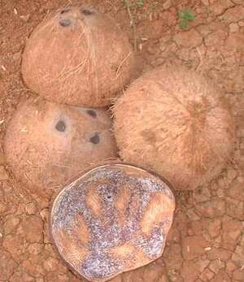

bagul 
/gabul/
n.
coconut shell
Ka bagul iyan ka ngaran te kuub te behas te niyug ne makehal. Iyan seini ka igkarangeb ne untud te behas te niyug. Manipis dè seini su henduen dè kanipis te kendiru. Emun ke egluwitan ka niyug, sikan naa iya se egsinundul ne bukus ne kekehali human ka behas en iya.
Malegleg ka bagul ne igtemeg emun ke egkahangu e.
Coconut shell is blazes as light to fire if it is dry.
Periya nu ka niyug wey kenè nu iregpak ka bagul su eggimuwen ku ne bulalu.
Tear apart the coconut and do not throw the shell because I will make it a ladle.
Amana ne mahulub ka akew ku ne bagul ke diya a egbayè te simintu.
My coconut shell stilts are noisy when I walked on the highway.
Eng. shell
Ceb. bagol
Online dict status: -
Usage level: L
Updated by: TME
Last updated: 13/Oct/2009
This page last updated: 19/May/2012
Copyright © 2009-2010, Matigsalug Language Christian Association, Inc